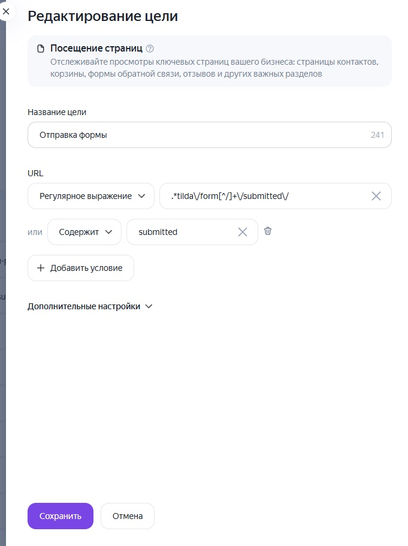
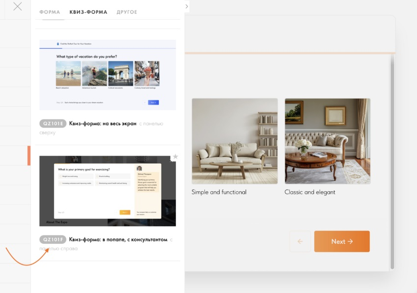

Блог о платном трафике
Как настроить цели Яндекс Метрики на Tilda
Если сайт сделан на Tilda, для нормальной аналитики недостаточно просто установить счетчик Яндекс Метрики. Нужно проверить, фиксирует ли Метрика реальные целевые действия: успешную отправку формы, заявку из квиза, клик по важной кнопке, переход по телефону или в мессенджер.
Для форм, кнопок, попапов и квизов Tilda умеет передавать в аналитику виртуальные страницы. На их основе можно создавать точные цели в Метрике. Дополнительно Яндекс Метрика умеет автоматически создавать часть целей, например для отправки форм, кликов по телефону и email.
Какие цели нужны на сайте Tilda
Набор целей зависит от того, какие действия действительно имеют значение для бизнеса. Не нужно превращать каждый клик на странице в основную конверсию.
| Действие | Что лучше отслеживать |
|---|---|
| Отправка формы | успешную отправку формы |
| Квиз | отправку формы и при необходимости отдельные шаги |
| Важная кнопка | клик по конкретной кнопке |
| Телефон | клик по номеру телефона |
| клик по адресу email | |
| Мессенджер | переход в мессенджер |
| Попап | открытие попапа, если это действительно полезно для анализа |
Для рекламы основной целью обычно должно быть действие, максимально близкое к реальному обращению. Поэтому отправка формы полезнее простого клика по кнопке, которая только открывает форму.
Сначала подключите Яндекс Метрику к Tilda
Счетчик лучше подключать штатным способом через:
Tilda -> Настройки сайта -> Аналитика -> Яндекс Метрика
Укажите номер счетчика, сохраните изменения и переопубликуйте все страницы сайта.
Переопубликация важна: после изменения настроек аналитики новый код должен попасть на опубликованные страницы. Tilda отдельно указывает, что после подключения или изменения счетчика страницы нужно опубликовать заново.
Для целей Tilda штатное подключение особенно удобно, потому что платформа передает в аналитику виртуальные страницы действий.
Как Tilda передает действия в Яндекс Метрику
Когда пользователь выполняет определенное действие, Tilda может передать в систему аналитики просмотр специальной виртуальной страницы.
Например, после успешной отправки формы появляется адрес вида:
/tilda/form436204329/submitted
Для клика по кнопке может передаваться адрес:
/tilda/click/rec435762390/button1
Для шага квиза:
/tilda/form836770867/step1
В Яндекс Метрике такую виртуальную страницу можно использовать как условие цели типа «Посещение страниц». Получается простая цепочка: пользователь совершает действие -> Tilda передает виртуальную страницу -> Метрика фиксирует ее -> цель считается достигнутой.
Как настроить одну цель на отправку всех форм Tilda
Если на сайте несколько форм, создавать отдельную основную цель для каждой обычно нет смысла. Форма в шапке, форма внизу страницы, pop-up и форма заказа консультации могут иметь разные номера блоков, но действие для бизнеса одно - пользователь отправил заявку.
Я использую общую цель, которая ловит виртуальные страницы отправки форм Tilda по регулярному выражению:
.*tilda\/form[^/]+\/submitted\/
Смысл конструкции простой. Номер формы между form и submitted может быть любым, поэтому цель продолжит работать для разных форм сайта.
В Яндекс Метрике создайте цель типа «Посещение страниц» и задайте условие по регулярному выражению.
Для подстраховки я дополнительно добавляю условие по submitted.

Tilda также рекомендует использовать submitted, если нужно создать общую цель для успешной отправки форм.
На практике получается универсальная цель, которую не приходится переделывать каждый раз после появления новой формы.
Аналитика - это часть работы над рекламой, а не отдельная задача. Что именно я делаю с рекламным кабинетом и счетчиком, видно в разделе «Настройка Яндекс Директ под ключ».
Как настроить цель на конкретную форму
Если нужно отслеживать только одну конкретную форму, используйте ее полный виртуальный адрес.
Например:
/tilda/form436204329/submitted
Его можно использовать как отдельное условие цели. Такой вариант нужен, когда разные формы соответствуют разным типам обращений и их важно разделять в отчетах.
Автоматические цели Яндекс Метрики на Tilda
Яндекс Метрика умеет автоматически создавать цели для ряда действий на сайте. Среди них могут быть отправка формы, клик по номеру телефона, клик по email, переход в мессенджер и нажатие на кнопку.
Автоматические цели полезны как дополнительный слой аналитики, особенно если нужно быстро увидеть базовые действия без ручной настройки каждой цели.
Но для основной рекламной конверсии я предпочитаю контролируемую цель, где понятно, какое именно действие считается заявкой. Например, для формы Tilda это успешная отправка с виртуальной страницей submitted, а не просто клик по кнопке перед формой.
Проверить, включены ли автоматические цели, можно в настройках счетчика Яндекс Метрики.
Как настроить цель на кнопку в Tilda
Если нужно измерять нажатия на конкретную кнопку, в настройках блока Tilda включите передачу данных о клике в систему аналитики.
После этого Tilda покажет виртуальный адрес примерно такого вида:
/tilda/click/rec435762390/button1
В Метрике создайте цель типа «Посещение страниц» и используйте адрес этой виртуальной страницы как условие.
Если в блоке две кнопки, Tilda позволяет передавать данные отдельно для каждой.
Важно отличать клик от конечной конверсии. Если кнопка только открывает форму, ее нажатие полезно как промежуточное действие, но основной целью лучше оставить успешную отправку формы.
Как настроить отслеживание квиза Tilda
С квизами есть дополнительный момент, о котором легко забыть.
Если используется блок QZ101 или одна из его вариаций QZ101A-QZ101F, откройте настройки блока и включите:
«Отправлять дополнительные события в систему аналитики»

После этого Tilda начинает передавать виртуальные страницы отдельных шагов квиза.
Например:
/tilda/form836770867/step1
/tilda/form836770867/step2
/tilda/form836770867/step3
Эти события позволяют увидеть, на каком этапе люди чаще прекращают заполнение квиза.
Если много пользователей открывают первый шаг, но почти никто не доходит до формы контактов, проблема может быть не в рекламе. Возможно, сам квиз слишком длинный, один из вопросов непонятен или контактные данные запрашиваются слишком рано.
Отслеживание шагов позволяет увидеть эту картину в цифрах.
Как создать цель на конкретный шаг квиза
Для конкретного шага используйте полный адрес виртуальной страницы.
Например:
/tilda/form836770867/step1
Для второго шага:
/tilda/form836770867/step2
Не стоит использовать слишком широкое условие вроде step, если задача - анализировать конкретный этап. Иначе в одну цель могут попасть разные шаги.
Для отдельного шага Tilda рекомендует указывать виртуальную страницу полностью и использовать точное совпадение.
Я обычно называю такие цели максимально понятно:
Квиз - шаг 1Квиз - шаг 2Квиз - отправка формы
Через несколько месяцев это сильно упрощает работу с отчетами. Названия вроде goal1, forma2 или test быстро превращают Метрику в свалку.
Как проверить, срабатывает ли цель на Tilda
После настройки обязательно выполните целевое действие самостоятельно. Сам факт существования цели в интерфейсе Метрики еще не означает, что она работает.
Для актуального кода счетчика самый удобный способ проверки - встроенный отладчик Яндекс Метрики.
Добавьте к адресу страницы:
?_ym_debug=2
Например:
https://site.ru/?_ym_debug=2
Откройте страницу, выполните нужное действие и откройте панель отладки внизу сайта. Во вкладках Events и Console можно увидеть, какие события получил счетчик.
Если в настройках Метрики включен фильтр «Не учитывать мои визиты», проверку лучше выполнять в режиме Инкогнито.
Подробно этот способ разобран в отдельной статье «Как проверить цель в Яндекс Метрике».
Почему цель Яндекс Метрики на Tilda не срабатывает
Если цель не фиксируется, проверяйте цепочку по порядку. Так быстрее понять, на каком этапе пропадают данные.
- Убедитесь, что номер счетчика указан в Tilda через «Настройки сайта -> Аналитика -> Яндекс Метрика».
- После подключения или изменения счетчика переопубликуйте все страницы.
- Выполните реальное целевое действие и проверьте, передает ли Tilda нужную виртуальную страницу.
- Сравните виртуальный адрес с условием созданной цели в Метрике.
- Проверьте событие через
_ym_debug=2.
Если отладчик вообще не видит счетчик или события, проверьте блокировщики рекламы и другие расширения браузера. Яндекс отдельно указывает AdBlock и другие скрипты среди возможных причин, по которым счетчик или отладчик может не работать.
Есть еще один частый случай: в Метрике включен фильтр «Не учитывать мои визиты». Тогда собственная тестовая сессия может не попасть в статистику. Для проверки используйте приватный режим браузера.
Если событие видно в отладчике, а цель не достигается, проблема обычно уже не в Tilda, а в условии самой цели. Сравните переданный виртуальный адрес и условие в Метрике символ в символ.
Коротко
Для обычных форм Tilda основная цель должна фиксировать успешную отправку, а не только нажатие на кнопку. Для нескольких форм удобно использовать общую цель по виртуальным страницам submitted.
Клики по отдельным кнопкам можно отслеживать через виртуальные страницы вида:
/tilda/click/rec.../button1
Для квиза QZ101 сначала включите передачу дополнительных событий в аналитику, после чего отслеживайте нужные шаги по виртуальным страницам step1, step2 и так далее.
Автоматические цели Метрики полезно оставить включенными как дополнительный источник данных, но основные рекламные конверсии лучше настраивать так, чтобы было понятно, какое реальное действие пользователя они фиксируют.
После настройки обязательно проверьте цель через _ym_debug=2. Цель, которая создана в интерфейсе, но не проверена на опубликованном сайте, нельзя считать настроенной.